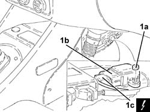

3350E30 lateral acceleration and yaw sensor r r
- Path
- Procedures > 33 BRAKING SYSTEM > 3350 DRIVE CONTROL' > 3350E vehicle direction control system vdc > 3350E30 lateral acceleration and yaw sensor r r
- Kind
- repair procedure (removal / refitting; the operation number is the code)
- Applies to
- all engines; all production periods
- Interactive page
- https://sloeber94.github.io/elrnDB-a147/en/#/3025270
Applies to: all engines; all production periods
 Removing
Removing
 Refitting
RefittingEnsure that the ignition key is in the OFF position, then disconnect the negative battery terminal (-).
 | Name | Connector |
|---|---|---|
- | Battery |
Proceed with removal 7040A65 passenger compartment box lock , one , r r .
1. Undo the nuts (1a) and remove the lateral acceleration and slew sensor (1b) after disconnecting the electrical connection (1c).
| Name | Connector |
|---|---|---|
1c | Slewing sensor (VDC) |

Applies to: all engines; all production periods
Refitting
RemovingConnect the electrical connection to the lateral acceleration and slew sensor, then refit it in its seating and secure it with its nuts.
Proceed with refitting 7040A65 passenger compartment box lock , one , r r .
Connect the negative (-) battery terminal.
Topics linked from this page (3)
- 7040A65 passenger compartment box lock , one , r r
- A1B Battery ( Connectors )
- K74 Slewing sensor (VDC)
Topics that link to this page (7)
- 3330D11 brake servo - r r including seperation from master cylinder - facia lining removed for rhd version
- 5040A80 expansion/connection pipe - r r
- 5040B30 expansion valve (tube orifice) - r+r
- 5040C10 air conditioner box - r+r
- 5040C15 air conditioner housing - r r with facia disconnected for versions with passenger airbag
- 5040C50 air conditioner heater radiator - r+r
- 5040C64 a/c evaporator - r+r